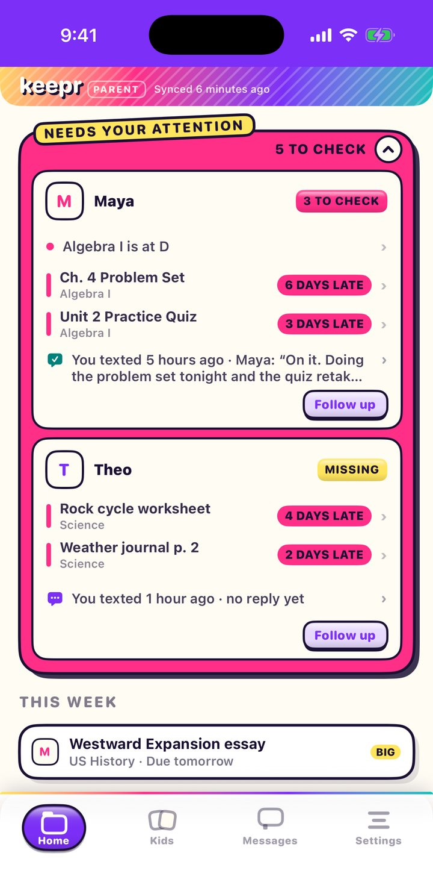
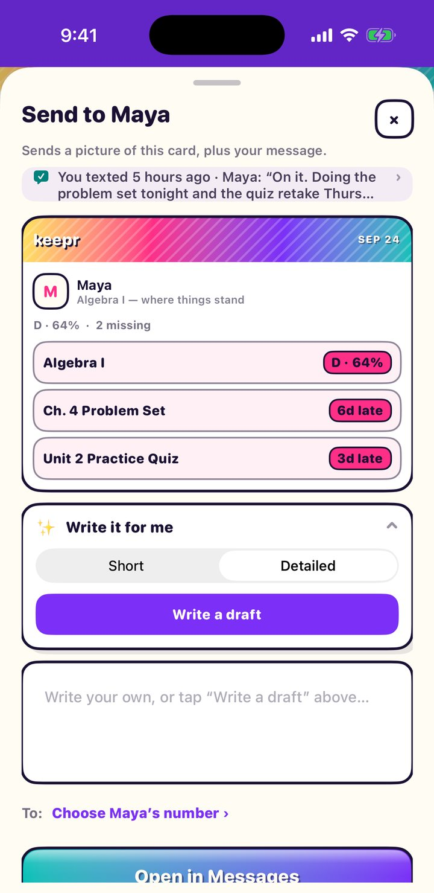
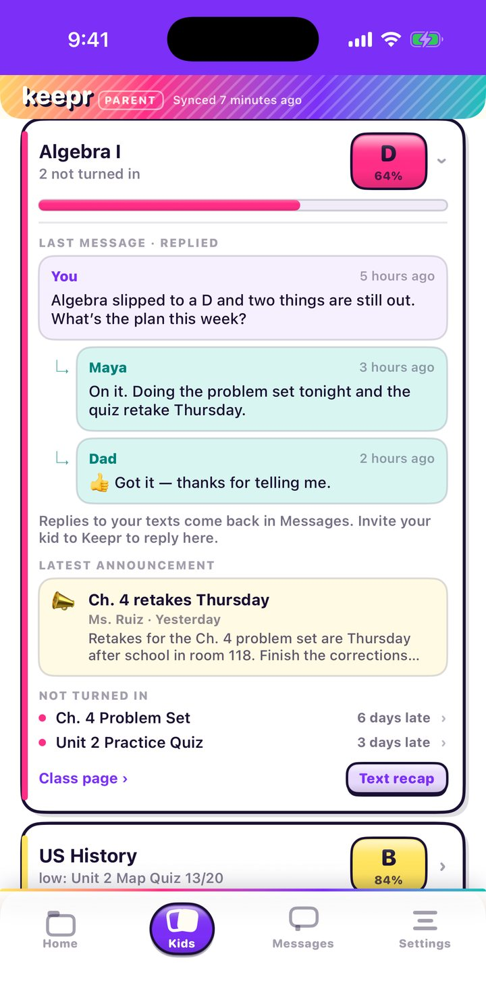
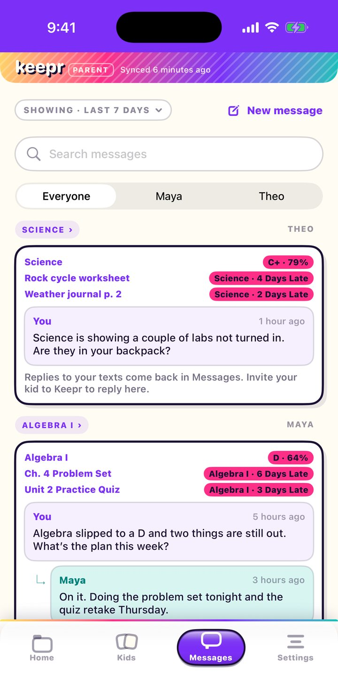

Every kid. Every grade. One binder.
Keepr Parent checks Canvas for you, tells you what actually needs a look, and helps you ask about it without the lecture. Then it shows you the answer.

Why parents like it
Less nagging. More knowing.
-
All their classes, one page
Grades, missing work, and what’s due next, for every kid.
-
A nudge, not a firehose
A short note before school and after it. Otherwise Keepr stays quiet.
-
Ask once. Hear back.
Text about a class, and the answer shows up right under your question.
Take a look
From “what’s missing?” to “it’s handled.”
Keepr finds the problem, helps you ask about it, and keeps track of what your kid says back.

Ask without the lecture
Keepr turns the grades into a card and can write the message for you.

The whole story of a class
The grade, your last message and the reply, the teacher’s latest post, and what’s still out.

Every conversation, by class
Each message remembers which assignments it was about, so nobody’s left guessing.
New in Keepr Parent
Ask, answer, done.
Keepr used to stop at the text. Now it helps with the whole conversation, from the question to the answer.
Messages, sorted by class
A new Messages tab keeps every text you send, grouped by class and tagged with the assignments it was about. Replies stack underneath.
Canvas answers for them
Asked if something got turned in? Once it has, Keepr says so right in the conversation, with the date. Nobody has to type a thing.
Answer in one tap
A thumbs-up, “Nice work,” “Update?”, or “Help?”, right under your kid’s reply. You can take one back for 15 minutes.
Write it for me
Apple Intelligence drafts a short or detailed message from what’s on the card. It runs on your iPhone, and you can edit before you send.
Share with the other parent
Invite a co-parent and your kid through iCloud. Everyone sees what’s been asked, so your kid doesn’t get the same text twice.
Quarter countdown
“Q1 closes in 38 days” sits above everything else, and it gets louder in the final week, while there’s still time to fix things.
What’s inside
Everything in the binder.
Needs your attention
Slipping grades and each late assignment, named, with how late it is. Tap a line to go straight to it.
A folder for every kid
Each kid gets their own tab with classes, grades, and the quarter’s GPA, clearly marked with which quarter it’s for.
Class pages
How the grade is weighted, what’s been posted, and how to reach the teacher.
From their teachers
The latest class announcement shows up with the class it belongs to.
Text it home
Turn a grade or a pile of missing work into one card. Send it in Keepr, or by text if you’d rather.
Alerts you pick
A before-school note, an end-of-day recap, and quiet hours. You decide what pings you and when.
Getting set up
Three steps. No homework.
Connect Canvas
Start your 14-day free trial, and Keepr walks you through making a Canvas access token in the app. No password to hand over.
Match your kids
Keepr finds the students on your Canvas parent account. Tell it who’s who, and what your kids call you.
Bring the family
If you want, invite the other parent and your kid from Settings. Then get on with your day.
Just want to peek?
Tap “Look around with sample data” on the first screen to explore Keepr Parent with two pretend kids. It’s free, and you don’t need a Canvas account.
Read-only
Keepr reads grades from Canvas. It never changes a thing.
No passwords
Keepr never sees your Canvas password.
No Keepr server
Grades go straight from Canvas to your phone. Family messages sync through your own iCloud.